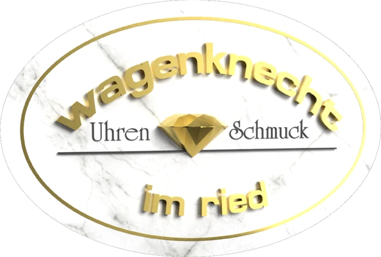

Unsere Website wird gerade überarbeitet.
Wir sind bald wieder online für Sie da. Im Laden in der Hindenburgstraße sind wir wie gewohnt erreichbar.
Laden
Hindenburgstraße 9
86609 Donauwörth
0906 5388
Öffnungszeiten
| Di, Do, Fr | 9:30–12:30 14:00–18:00 |
| Mi, Sa | 9:30–12:30 |
| Mo, So | geschlossen |